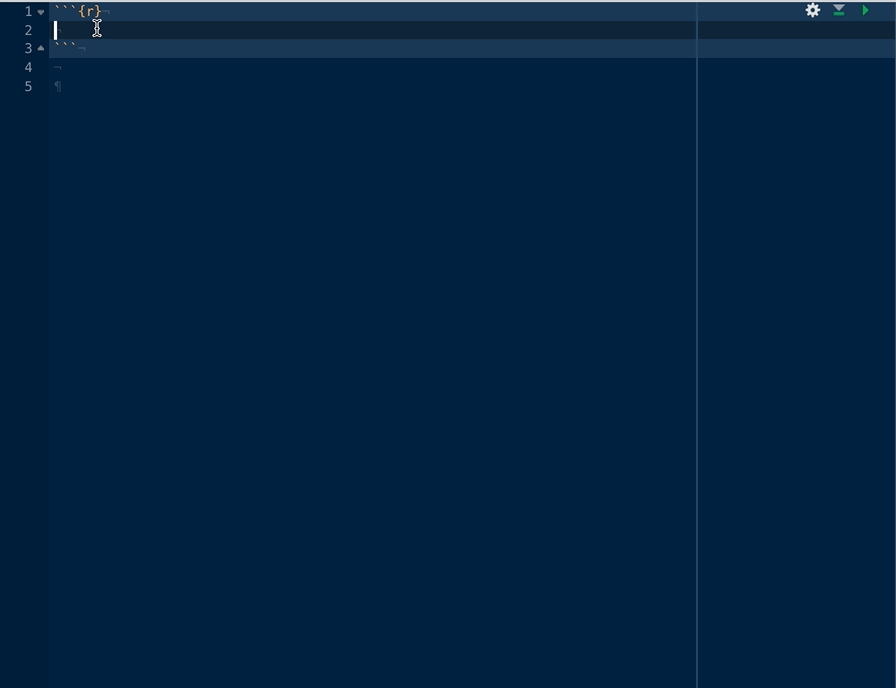

nhstplot – Plot Null Hypothesis Significance Tests

nhstplot is a fairly simple package to use. This vignette is intended to explain the basics (plotting using the defaults), before showing how to use the options.
The basics
After installing the library with install.packages("nhstplot") you need to load the library:
library(nhstplot)
‘nhstplot’ is composed of 4 functions, one for each major NHST test “family” :
\(\chi^2\)tests (with theplotchisqtestfunction)\(F\)tests (with theplotftestfunction)\(t\)tests (with theplotttestfunction)\(z\)tests (with theplotztestfunction)
Let’s see how to use each one without changing the graphical options.
\(\chi^2\) tests
The plotchisqtest function only requires 2 arguments : The first one is the \(\chi^2\) value (parameter : chisq), and the second one is the degrees of freedom (parameter df).
Here’s an example with respectively 8 and 4.
plotchisqtest(chisq = 8, df = 4)

Note that the same is achieved with plotchisqtest(8,4).
You can also use the function by passing an object created by chisq.test()…
test <- chisq.test(c(A = 37, B = 18, C = 25))
plotchisqtest(test)

\(F\) tests
The plotftest function only requires 3 arguments : The first one is the \(F\) value (parameter : f), and the second and third ones are respectively the degrees of freedom of the numerator (parameter dfnum) and the denominator (parameter dfdenom).
Here’s an example with respectively 4, 3 and 5.
plotftest(f = 4, dfnum = 3, dfdenom = 5)

Note that the same is achieved with plotftest(4,3,5).
You can also use the function by passing an object created by lm()…
x <- rnorm(10) ; y <- x + rnorm(10)
fit <- lm(y ~ x)
plotftest(fit)

\(t\) tests
The plotttest function only requires 2 arguments : The first one is the \(t\) value (parameter : t), and the second one is the degrees of freedom of the numerator (argument df).
Here’s an example with respectively 2 and 10.
plotttest(t = 2, df = 10)

Note that the same is achieved with plotttest(2,10).
By default, the plotttest function plots a two-tailed test. However, a one-tailed test can be plotted by adding the argument tails = "one":
plotttest(2, 10, tails = "one")
 The left or right tail is automatically selected using the sign of provided
The left or right tail is automatically selected using the sign of provided \(t\):
plotttest(-2, 10, tails = "one")

You can also use the function by passing an object created by t.test()…
test <- t.test(rnorm(10), rnorm(10))
plotttest(test)

…or cor.test().
test <- cor.test(rnorm(10), rnorm(10))
plotttest(test)

\(z\) tests
The plotztest function only requires 1 argument : The \(z\) value (parameter z).
Here’s an example with a \(z\) value of 2.
plotztest(z = 2)

Note that the same is achieved with plozttest(2).
By default, the plotztest function plots a two-tailed test. However, a one-tailed test can be plotted by adding the argument tails = "one":
plotztest(2, tails = "one")
 The left or right tail is automatically selected using the sign of provided
The left or right tail is automatically selected using the sign of provided \(t\):
plotztest(-2, tails = "one")

Customizing the output
Blanking the plot
NHST is a process that isn’t straightforward to explain or understand. Before looking at the \(p\) value itself, it starts with stating a null hypothesis. As a consequence, it can be helpful to provide a “step-by-step” explanation of process that may require to plot the density probability function before adding the cutline and p-value.
Hopefully, all the functions in nhstplot can do that very simply by passing the argument blank = TRUE.
plotztest(-2, blank = TRUE)

In reality, when blank = TRUE, every thing is plotted the same way as with blank = FALSE (default), but some objects are simply make transparent. This means that the two plots are scaled exactly the same way, which can be useful to plot one version after another, for example in slides of a presentation or in an animated gif.
Changing the x-axis limits
The argument xmax can be used to manually provide a maximum for the x-axis. For symmetrical distributions ($t$ and \(z\)), the minimum is set automatically, so only one value (the maximum) should be provided.
plotztest(2, xmax = 10)

Color themes
For all 4 functions, the default theme is light blue and red (like seen above). But other themes are available with the themeparameter, as shown below.
plotztest(2, theme = "blackandwhite")

plotztest(2, theme = "whiteandred")

plotztest(2, theme = "blueandred")

plotztest(2, theme = "greenandred")

plotztest(2, theme = "goldandblue")

Custom colors
A first important note : The themeargument supersedes any custom colors you may use, so don’t provide anything (or default) to the theme parameter if you want to use custom colors.
\(\chi^2\)and\(f\): The parameterscolorleft,colorleftcurve,colorrightandcolorrightcurvecontrol the curve and areas under the curve colors in theplotchisqtestandplotftestfunctions. Additionnally,colorplabelandcolorcutlinecontrol the colors of the p value label and of the cut line. For example:
plotftest(4, 3, 5, colorleft = "lightgreen", colorleftcurve = "red", colorright = "indianred", colorrightcurve = "blue", colorplabel = "darkgrey", colorcut = "#FFA500")

\(t\)and\(z\):The parameterscolormiddle,colormiddlecurve,colorsidesandcolorsidescurvecontrol the curve and areas under the curve colors in theplotttestandplotztestfunctions. Additionnally,colorplabel(defaults to the same andcolorcutlinecontrol the colors of the p value label and of the cut line. For example:
plotztest(2, colormiddle = "lightgreen", colormiddlecurve = "red", colorsides = "indianred", colorsidescurve = "blue", colorplabel = "darkgrey", colorcut = "#FFA500")

Custom fonts
The font family of all the text in the graph can be changed using the fontfamily argument (you can for example use mono, Palatino, Helvetica or sans. The default is serif.
plotztest(2, fontfamily = "Helvetica")

- Note that the package
extrafontscan be used to provide your own fonts (e.g. to match your slides font), and appears to work well withnhstplot. Fonts loaded throughextrafontscan be called in thefontfamilyargument in thenhstplotfunctions (e.g.,plotztest(2, fontfamily = "Roboto")).
Line size
The cutlinesizeand the curvelinesize control the size of the line sizes. By default, the cutlinesizeis the same as the curvelinesize.
plotztest(2, cutlinesize = 2, curvelinesize = 1)

Digits
The number of significant digits can be modified in all functions using signifdigitschisq / signifdigitsf / signifdigitst / signifdigitsz for the test statistic. The default is 3 for all.
plotztest(2.134553, signifdigitsz = 2)